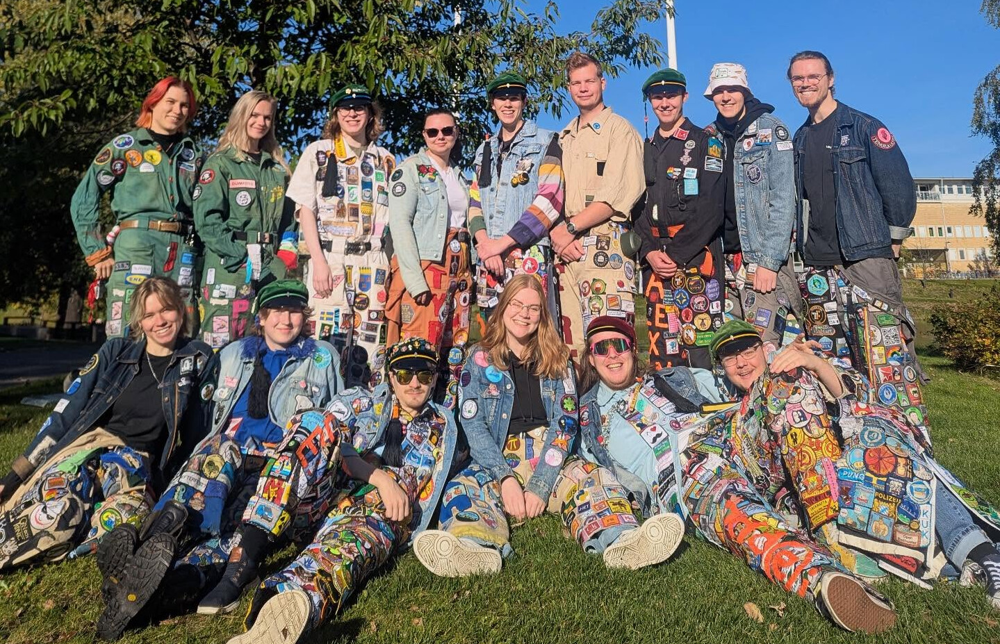

Jackbärare
Hur vet man egentligen att någon är med i Overallens vänner?
Jo! Vi bär, tillsammans med våra overaller fulla av märken, även en jeansjacka med vårt ryggmärke!
Har man frågor om overaller, overallkulturen, märken eller egentligen vad som helst mellan himmel och jord är det bara att komma fram och prata med oss!
